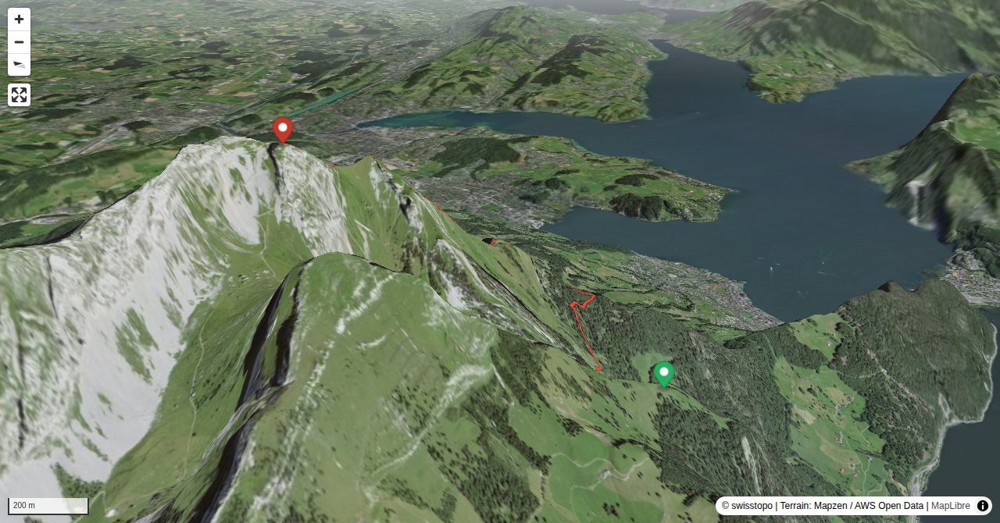

Among the many alpine routes on Pilatus the one on the east ridge is certainly the most popular. The itinerary is logical, sneaky, and the difficulties increase, the higher you climb (welcome warm-up phase). Moreover, if necessary, you can leave the ridge on several points. It is an ideal target for those who like challenging itineraries in pre-alpine landscapes.
Quick Facts
| Summit elevation | 2107 m |
|---|---|
| Difficulty | SAC T5+ Check the route notes below for terrain and commitment level. Guide |
| Trailhead | Ämsigen, upper station |
| Distance | 4.0 km (out-and-back) |
| Total ascent | ~914 m |
| Elevation range | 1253-2107 m |
| Route sources | SAC Route Portal |
Photos


Route Map & Elevation
i
i
sac_scale (precise T1–T6) with
swissTLM3D Wanderwegart
fallback where OSM is silent (coarser T2/T3 and T4+ buckets).
Coverage: OSM 84.8% · swisstopo 13.1% · unknown 0.0%.Elevations computed from the inlined GPX track (SwissTopo height API).
Loading forecast…
3D Terrain View

Route Details
On the east ridge
- TODO: Step 1 description.
- TODO: Step 2 description.
Terrain & safety
Until Rosegg T4: Scrambling passages before Windegg. Esel east face T5+: climbing on schrofen and rock up to the second degree. The route is marked, some passages are equipped with fixed ropes, and the exit to the summit is very (!) exposed. Only to be undertaken in dry conditions!
Source: SAC Route Portal
Getting There & Back
Start: Ämsigen, upper station (1358 m)
Directions from to Ämsigen, upper station
End: Pilatus Kulm (2105 m)
Directions from Pilatus Kulm back to
Field Reference
| Trailhead | Ämsigen, upper station | 46.97010, 8.27130 |
|---|---|---|
| Summit | Pilatus Esel (2107 m) | 46.97917, 8.25621 |
Coordinates are WGS84 decimal degrees (lat, lon). Emergency: 112 (general) or 1414 (Rega air rescue). Page URL: